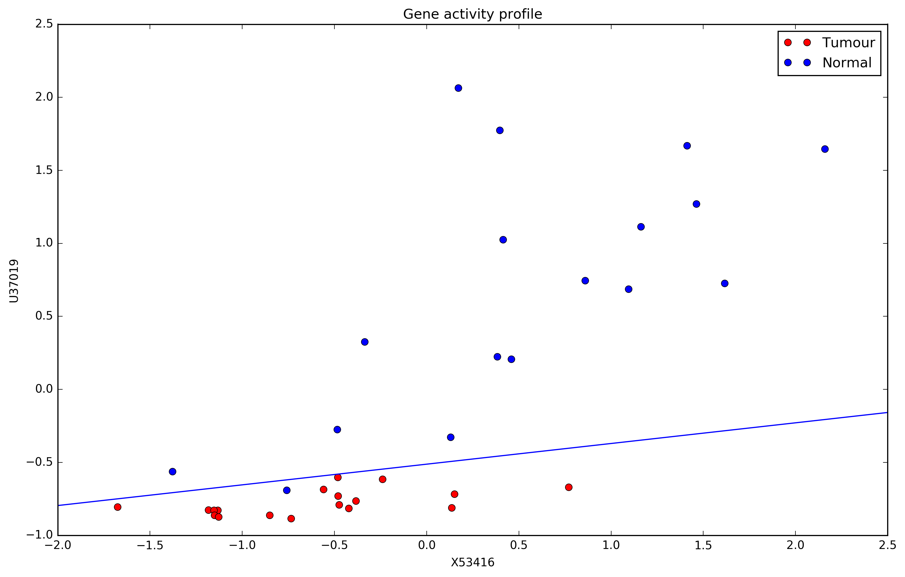

Aprendizagem Automática
4. Logistic Regression
Ludwig Krippahl
Logistic Regression
Summary
- Classification, introduction
- Linear separability
- Logistic regression, and playing in higher dimensions
Logistic Regression
Separability
Separability
- Classes are linearly separable if they can be separated by some linear combination of feature values (a hyperplane).

Separability
- This frontier is a linear discriminant.
Separability
- Otherwise, classes in the dataset are not linearly separable
Separability
Classification
- In regression, we defined a straight line with two parameters:
y=θ1x+θ2 - But in classification we need to know which side of the line is which
- More generally, a hyperplane in N dimensions
- This we can do if we define the hyperplane with a perpendicular vector:
w⃗ Tx⃗ +w0=0 - Note:
x⃗ is an N dimensional vector
Separability
w⃗ Tx⃗ +w0=0

Separability
(Linear) Discriminant
- Frontier given by function that is positive on one side of the hyperplane and negative on the other.
y(x⃗ )=w⃗ Tx⃗ +w0 - So one class is the positive one, the other the negative one.
How do we find the discriminant?
Logistic Regression
The Wrong Answer
Wrong Answer
Fitting with LMS
- We want to find the best
w⃗ andw0 for - This function is negative one one side and positive on the other
- So we can try minimizing the squared error, considering classes 1 and -1:
Wrong Answer
Fitting with LMS
- Data on gene expression (Uri Alon et. al.,PNAS, 96(12), 1999)
- Carbonic anhydrase IV gene (M83670)
- Guanylate cyclase activator 2A gene (M97496)
- Tumour (1) or Normal (0)
-81 10 1 -30 60 1 -1 48 1 4 78 1 ... 116 542 0 718 1816 0 332 412 0
Wrong Answer
Preprocessing the data
- Need to rescale the values
- Normalization:
xnew=x−min(X)max(X)−min(X) - Standardization:
xnew=x−μ(X)σ(X) -
Important : store these parameters and apply to all new points
import numpy as np
mat = np.loadtxt('gene_data.txt',delimiter='\t')
Ys = mat[:,[-1]]
Xs = mat[:,:-1]
means = np.mean(Xs,0)
stdevs = np.std(Xs,0)
Xs = (Xs-means)/stdevsWrong Answer
Simplifying the expression
- Instead of
y(x⃗ )=w⃗ Tx⃗ +w0 - Let's merge the parameters and add a 1 to the feature vectors:
- Add the 1s
def expand_features(X):
"""append a columns of 1
"""
X_exp = np.ones((X.shape[0],X.shape[1]+1))
X_exp[:,:-1] = X
return X_expWrong Answer
Fitting with LMS
- Measure the error
- Note that the class values are 0 and 1, so change to -1 and 1
def quad_cost(theta,X,y):
"""return error value comparing signed distance with y
"""
coefs = np.zeros((len(theta),1))
coefs[:,0] = theta
vals = np.dot(X,coefs)
return np.mean((vals-(2*y-1))**2)Wrong Answer
Fitting with LMS
- Minimize the error
from scipy.optimize import minimize
import matplotlib.pyplot as plt
X_exp = expand_features(Xs)
coefs = np.ones(X_exp.shape[1])
opt = minimize(quad_cost,coefs,(X_exp,Ys),tol=0.00001)
coefs = opt.x
# plot the chartWrong Answer
Not a good result...
Wrong Answer
Fitting with LMS
- Not a good result...
- Minimizing the squared error makes points away from the discriminant weigh more
- This is good in regression but bad in classification, as it pulls the discriminant towards distant points
Regression
- Fit the data as closely as possible to predict continuous values
Classification
- Find discriminant between discrete classes
Logistic Regression
Logistic Regression
Logistic Regression
Logistic Regression
- Assume there is a function:
- We want our hyperplane to be at
- Regression on probabilities, but we'll use it as a classifier.
- Vector
x⃗ is an N dimensional vector of features - Based on those features we choose the class with larger estimated probability
- Assumed:
g(x⃗ ,w˜)=P(C1|x⃗ ) - Plane:
P(C1|x⃗ )=P(C0|x⃗ )=1−P(C1|x⃗ )
Logistic Regression
Logistic Regression
- Assumed:
g(x⃗ ,w˜)=P(C1|x⃗ ) - Plane:
P(C1|x⃗ )=P(C0|x⃗ )=1−P(C1|x⃗ )
Logistic Regression
Logistic Function: f(x)=11+e−k(x−x0)
Logistic Regression
Logistic Function
- Unlike quadratic curve, logistic function levels with distance
- This solves the problem of points farther away pulling the discriminant
Logistic Regression
- How to find find
w˜ by maximum likelihood - Given:
g(x⃗ ,w˜)=P(tn=1|x⃗ ) andtn∈{0,1} - Maximize likelihood is to minimize the error in predicting probabilities (logistic loss or cross entropy):
Logistic Regression
Example 1: linearly separable
Example 1
- Load and standardize the data (as before)
- Write logistic function (Note: you won't be doing this)
def logistic(X):
"""return logistic function of vector X"""
den = 1.0 + np.e ** (-1.0 * X)
return 1.0 / den- And the logistic cost function to minimize
def log_cost(theta,X,y):
"""return logistic error value
X is matrix, one example per row and 1 in last column
y is a vector of classes 0 or 1
"""
coefs = np.zeros((len(theta),1))
coefs[:,0] = theta
sig_vals = logistic(np.dot(X,coefs))
log_1 = np.log(sig_vals)*y
log_0 = np.log((1-sig_vals))*(1-y)
return -np.mean(log_0+log_1)Example 1
- Minimizing this function, we get a better result:
Logistic Regression
Nonlinear Separability
Nonlinear Separability
This set is not linearly separable
Actin-binding protein X53416, smooth muscle cell Ca binding protein U37019

Nonlinear Separability
This set is not linearly separable
- But we can expand the features (nonlinearly).
Nonlinear Separability
- First, we add a term
x1×x2
def poly_3features(X):
"""append a column with the product of the two first features
"""
X_exp = np.zeros((X.shape[0],X.shape[1]+1))
X_exp[:,:-1] = X
X_exp[:,-1] = X[:,0]*X[:,1]
return X_exp- And we do a logistic regression in 3D
from sklearn.linear_model import LogisticRegression
#load and standardize data
X_exp = poly_3features(Xs)
reg = LogisticRegression(C=1e12, tol=1e-10)
reg.fit(X_exp,Ys[:,0])Nonlinear Separability
- This fits a plane in a 3D feature space

Nonlinear Separability
- Project back into the original plane
Nonlinear Separability
- Expand more:
x1,x2,x1x2,x21,x22

Nonlinear Separability
- Expand more:
x1,x2,x1x2,x21,x22,x31,x32

Nonlinear Separability
- Expand more:
x1,x2,x1x2,x21,x22,x31,x32,x21x2,x1x22
Nonlinear Separability
- Is this too much? Overfitting?
Logistic Regression
Summary
Logistic Regression
Summary
- Linear separability
- Linear discriminant (hyperplane)
-
Fitting the discriminant with LMS - Logistic Regression
- Linear separability in higher dimensions
- Next lecture: overfitting in classification
Further reading
- Bishop, Sections 4.1.1, 4.1.3 and 4.3.2
Aprendizagem Automática
4. Logistic Regression
Ludwig Krippahl